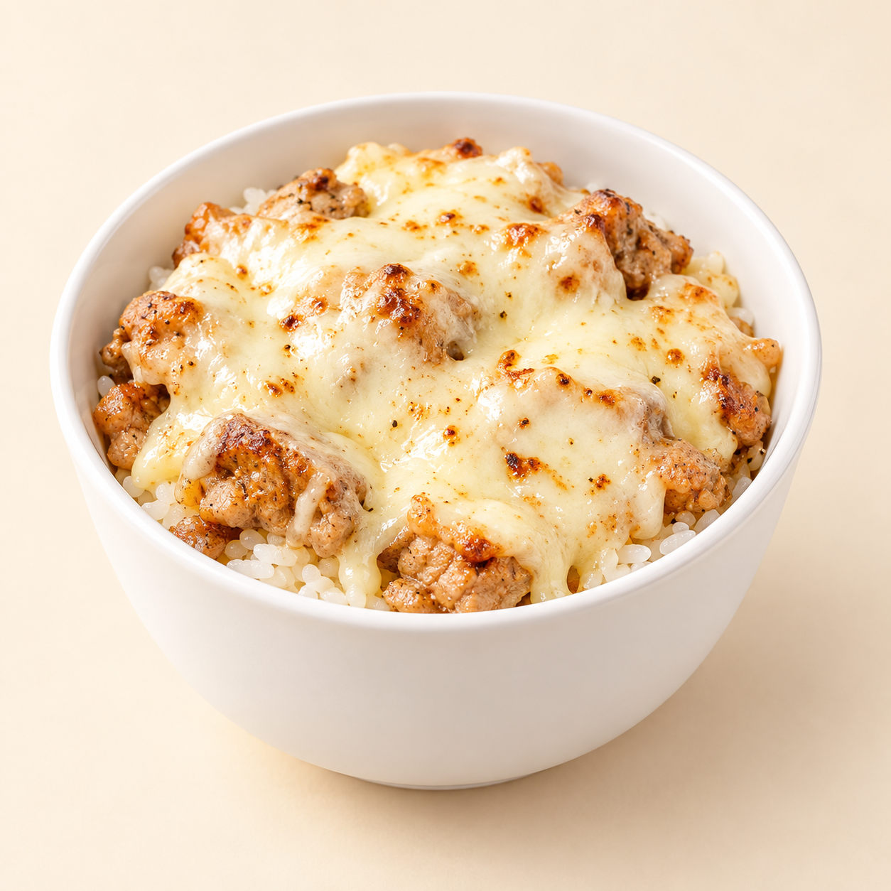
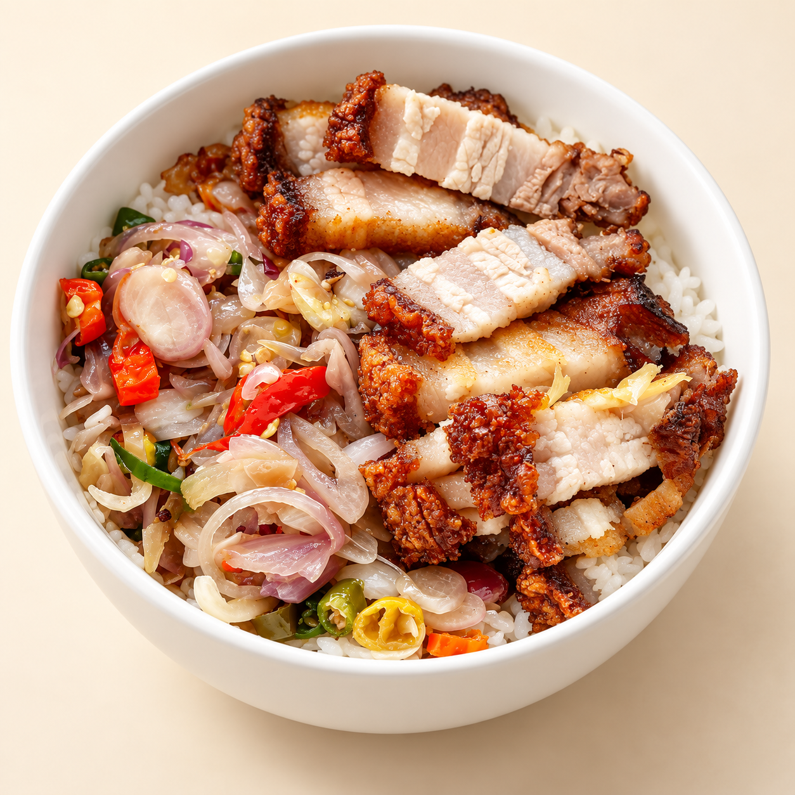

Same cravings.
Three delicious worlds.
Choose your experience. Each one has the full menu, Jakarta delivery areas,
and your order ready to send on WhatsApp.
01 / THE ORIGINALTimeless.
Timeless.
Tasty.
Classic.

The classic kitchen
Warm tones. Premium food. Easy ordering.
02 / MEET YOUR FOOD BUDDYLittle pig.
Little pig.
Big happy.
Porky's happy kitchen
Playful colours. A cute guide. Big flavour.
03 / THE BOWL LABYour bowl.
Your bowl.
In 3D.

The flavour dimension
Spin your bowl. Add extras. Explore in 3D.
A fresh look for every craving.
↗Explore all 37 refreshed menu images.